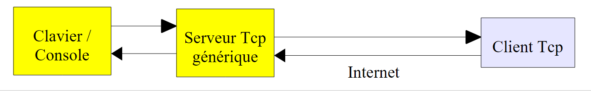

11. Les fonctions réseau de Python
Nous abordons maintenant les fonctions réseau de Python qui nous permettent de faire de la programmation TCP / IP (Transfer Control Protocol / Internet Protocol).
 |
11.1. Obtenir le nom ou l'adresse IP d'une machine de l'Internet
Programme (inet_01)
import sys, socket
#------------------------------------------------
def getIPandName(nomMachine):
#nomMachine : nom de la machine dont on veut l'adresse IP
# nomMachine-->adresse IP
try:
ip=socket.gethostbyname(nomMachine)
print "ip[%s]=%s" % (nomMachine,ip)
except socket.error, erreur:
print "ip[%s]=%s" % (nomMachine,erreur)
return
# adresse IP --> nomMachine
try:
name=socket.gethostbyaddr(ip)
print "name[%s]=%s" % (ip,name[0])
except socket.error, erreur:
print "name[%s]=%s" % (ip,erreur)
return
# ---------------------------------------- main
# constantes
HOTES=["istia.univ-angers.fr","www.univ-angers.fr","www.ibm.com","localhost","","xx"]
# adresses IP des machines de HOTES
for i in range(len(HOTES)):
getIPandName(HOTES[i])
# fin
sys.exit()
Notes :
- ligne 1 : les fonctions réseau de Python sont encapsulées dans le module socket.
Résultats
11.2. Un client web
Un script permettant d'avoir le contenu du paragraphe index d'un site web.
Programme (inet_02)
import sys,socket
#-----------------------------------------------------------------------
def getIndex(site):
# lit l'URL site/ et la stocke dans le fichier site.html
# au départ pas d'erreur
erreur=""
# création du fichier site.html
try:
html=open("%s.html" % (site),"w")
except IOError, erreur:
pass
# erreur ?
if erreur:
return "Erreur (%s) lors de la création du fichier %s.html" % (erreur,site)
# ouverture d'une connexion sur le port 80 de site
try:
connexion=socket.create_connection((site,80))
except socket.error, erreur:
pass
# retour si erreur
if erreur:
return "Echec de la connexion au site (%s,80) : %s" % (site,erreur)
# connexion représente un flux de communication bidirectionnel
# entre le client (ce programme) et le serveur web contacté
# ce canal est utilisé pour les échanges de commandes et d'informations
# le protocole de dialogue est HTTP
# le client envoie la commande get pour demander l'URL /
# syntaxe get URL HTTP/1.0
# les entêtes (headers) du protocole HTTP doivent se terminer par une ligne vide
connexion.send("GET / HTTP/1.0\n\n")
# le serveur va maintenant répondre sur le canal connexion. Il va envoyer toutes
# ses données puis fermer le canal. Le client lit tout ce qui arrive de connexion
# jusqu'à la fermeture du canal
ligne=connexion.recv(1000)
while(ligne):
html.write(ligne)
ligne=connexion.recv(1000)
# le client ferme la connexion à son tour
connexion.close()
# fermeture du fichier html
html.close()
# retour
return "Transfert reussi du paragraphe index du site %s" % (site)
# --------------------------------------------- main
# obtenir le texte HTML d'URL
# liste de sites web
SITES=("istia.univ-angers.fr","www.univ-angers.fr","www.ibm.com","xx")
# lecture des pages index des sites du tableau SITES
for i in range(len(SITES)):
# lecture page index du site SITES[i]
resultat=getIndex(SITES[i])
# affichage résultat
print resultat
# fin
sys.exit()
Notes :
- ligne 57 : la liste des Url des sites web dont on veut la page index. Celle-ci est stockée dans le fichier texte [nomsite.html] ;
- ligne 62 : la fonction getIndex fait le travail ;
- ligne 4 : la fonction getIndex ;
- ligne 20 : la méthode create_connection((site,port)) permet de créer une connexion avec un service TCP / IP travaillant sur le port port de la machine site ;
- ligne 35 : la méthode send permet d'envoyer des données au travers d'une connexion TCP / IP. Ici, c'est du texte qui est envoyé. Ce texte obéit au protocole HTTP (HyperText Transfer Protocol) ;
- ligne 40 : la méthode recv permet de recevoir des données au travers d'une connexion TCP / IP. Ici, la réponse du serveur web est lue par blocs de 1000 caractères et enregistrée dans le fichier texte [nomsite.html].
Résultats
Transfert reussi du paragraphe index du site istia.univ-angers.fr
Transfert reussi du paragraphe index du site www.univ-angers.fr
Transfert reussi du paragraphe index du site www.ibm.com
Echec de la connexion au site (xx,80) : [Errno 11001] getaddrinfo failed
Le fichier reçu pour le site [www.ibm.com] :
- les lignes 1-11 sont les entêtes HTTP de la réponse du serveur ;
- ligne 1 : le serveur demande au client de se rediriger vers l'URL indiquée ligne 8 ;
- ligne 2 : date et heure de la réponse ;
- ligne 3 : identité du serveur web ;
- ligne 4 : contenu envoyé par le serveur. Ici une page HTML qui commence ligne 13 ;
- ligne 12 : la ligne vide qui termine les entêtes HTTP ;
- lignes 13-19 : la page HTML envoyée par le serveur web.
11.3. Un client smtp
Parmi les protocoles TCP / IP, SMTP (SendMail Transfer Protocol) est le protocole de communication du service d'envoi de messages.
Programme (inet_03)
# -*- coding=utf-8 -*-
import sys,socket
#-----------------------------------------------------------------------
def getInfos(fichier):
# rend les informations (smtp,expéditeur,destinataire,message) prises dans le fichier texte [fichier]
# ligne 1 : smtp, expéditeur, destinataire
# lignes suivantes : le texte du message
# ouverture de [fichier]
erreur=""
try:
infos=open(fichier,"r")
except IOError, erreur:
return ("Le fichier %s n'a pu etre ouvert en lecture : %s" % (fichier, erreur))
# lecture de la 1ère ligne
ligne=infos.readline()
# suppression de la marque de fin de ligne
ligne=cutNewLineChar(ligne)
# récupération des champs smtp,expéditeur,destinataire
champs=ligne.split(",")
# a-t-on le bon nombre de champs ?
if len(champs)!=3 :
return ("La ligne 1 du fichier %s (serveur smtp, expediteur, destinataire) a un nombre de champs incorrect" % (fichier))
# "traitement" des informations récupérées
# on enléve à chacun des 3 champs les "blancs" qui précèdent ou suivent l'information utile
for i in range(3):
champs[i]=champs[i].strip()
# récupération des champs
(smtpServer,expediteur,destinataire)=champs
message=""
# lecture reste du message
ligne=infos.readline()
while ligne!='':
message+=ligne
ligne=infos.readline()
infos.close()
# retour
return ("",smtpServer,expediteur,destinataire,message)
#-----------------------------------------------------------------------
def sendmail(smtpServer,expediteur,destinataire,message,verbose):
# envoie message au serveur smtp smtpserver de la part de expéditeur
# pour destinataire. Si verbose=True, fait un suivi des échanges client-serveur
# on récupère le nom du client
try:
client=socket.gethostbyaddr(socket.gethostbyname("localhost"))[0]
except socket.error, erreur:
return "Erreur IP / Nom du client : %s" % (erreur)
# ouverture d'une connexion sur le port 25 de smtpServer
try:
connexion=socket.create_connection((smtpServer,25))
except socket.error, erreur:
return "Echec de la connexion au site (%s,25) : %s" % (smtpServer,erreur)
# connexion représente un flux de communication bidirectionnel
# entre le client (ce programme) et le serveur smtp contacté
# ce canal est utilisé pour les échanges de commandes et d'informations
# après la connexion le serveur envoie un message de bienvenue qu'on lit
erreur=sendCommand(connexion,"",verbose,1)
if(erreur) :
connexion.close()
return erreur
# cmde ehlo:
erreur=sendCommand(connexion,"EHLO %s" % (client),verbose,1)
if erreur :
connexion.close()
return erreur
# cmde mail from:
erreur=sendCommand(connexion,"MAIL FROM: <%s>" % (expediteur),verbose,1)
if erreur :
connexion.close()
return erreur
# cmde rcpt to:
erreur=sendCommand(connexion,"RCPT TO: <%s>" % (destinataire),verbose,1)
if erreur :
connexion.close()
return erreur
# cmde data
erreur=sendCommand(connexion,"DATA",verbose,1)
if erreur :
connexion.close()
return erreur
# préparation message à envoyer
# il doit contenir les lignes
# From: expéditeur
# To: destinataire
# ligne vide
# Message
# .
data="From: %s\r\nTo: %s\r\n%s\r\n.\r\n" % (expediteur,destinataire,message)
# envoi message
erreur=sendCommand(connexion,data,verbose,0)
if erreur :
connexion.close()
return erreur
# cmde quit
erreur=sendCommand(connexion,"QUIT",verbose,1)
if erreur :
connexion.close()
return erreur
# fin
connexion.close()
return "Message envoye"
# --------------------------------------------------------------------------
def sendCommand(connexion,commande,verbose,withRCLF):
# envoie commande dans le canal connexion
# mode verbeux si verbose=1
# si withRCLF=1, ajoute la séquence RCLF à commande
# donn?es
RCLF="\r\n" if withRCLF else ""
# envoi cmde si commande non vide
if commande:
connexion.send("%s%s" % (commande,RCLF))
# écho éventuel
if verbose:
affiche(commande,1)
# lecture réponse de moins de 1000 caractères
reponse=connexion.recv(1000)
# écho éventuel
if verbose:
affiche(reponse,2)
# récupération code erreur
codeErreur=reponse[0:3]
# erreur renvoyée par le serveur ?
if int(codeErreur) >=500:
return reponse[4:]
# retour sans erreur
return ""
# --------------------------------------------------------------------------
def affiche(echange,sens):
# affiche échange ? l'écran
# si sens=1 affiche -->echange
# si sens=2 affiche <-- échange sans les 2 derniers caractères RCLF
if sens==1:
print "--> [%s]" % (echange)
return
elif sens==2:
l=len(echange)
print "<-- [%s]" % echange[0:l-2]
return
# --------------------------------------------------------------------------
def cutNewLineChar(ligne):
# on supprime la marque de fin de ligne de [ligne] si elle existe
l=len(ligne)
while(ligne[l-1]=="\n" or ligne[l-1]=="\r"):
l-=1
return(ligne[0:l])
# main ----------------------------------------------------------------
# client SMTP (SendMail Transfer Protocol) permettant d'envoyer un message
# les infos sont prises dans un fichier INFOS contenant les lignes suivantes
# ligne 1 : smtp, expéditeur, destinataire
# lignes suivantes : le texte du message
# expéditeur:email expéditeur
# destinataire: email destinataire
# smtp: nom du serveur smtp à utiliser
# protocole de communication SMTP client-serveur
# -> client se connecte sur le port 25 du serveur smtp
# <- serveur lui envoie un message de bienvenue
# -> client envoie la commande EHLO: nom de sa machine
# <- serveur répond OK ou non
# -> client envoie la commande mail from: <exp?diteur>
# <- serveur répond OK ou non
# -> client envoie la commande rcpt to: <destinataire>
# <- serveur répond OK ou non
# -> client envoie la commande data
# <- serveur répond OK ou non
# -> client envoie ttes les lignes de son message et termine avec une ligne contenant le seul caract?re .
# <- serveur répond OK ou non
# -> client envoie la commande quit
# <- serveur répond OK ou non
# les réponses du serveur ont la forme xxx texte où xxx est un nombre à 3 chiffres. Tout nombre xxx >=500
# signale une erreur. La réponse peut comporter plusieurs lignes commençant toutes par xxx- sauf la dernière
# de la forme xxx(espace)
# les lignes de texte échangées doivent se terminer par les caractéres RC(#13) et LF(#10)
# # les paramètres de l'envoi du courrier
MAIL="mail2.txt"
# on récupère les paramètres du courrier
res=getInfos(MAIL)
# erreur ?
if res[0]:
print "%s" % (erreur)
sys.exit()
# envoi du courrier en mode verbeux
(smtpServer,expediteur,destinataire,message)=res[1:]
print "Envoi du message [%s,%s,%s]" % (smtpServer,expediteur,destinataire)
resultat=sendmail(smtpServer,expediteur,destinataire,message,True)
print "Resultat de l'envoi : %s" % (resultat)
# fin
sys.exit()
Notes :
- sur une machine Windows possédant un antivirus, ce dernier empêchera peut-être le script Python de se connecter au port 25 d'un serveur SMTP. Il faut alors désactiver l'antivirus. Pour McAfee par exemple, on peut procéder ainsi :
 |
- en [1], on active la console VirusScan
- en [2], on arrête le service [Protection lors de l'accès]
- en [3], il est arrêté
Résultats
Le fichier infos.txt :
smtp.univ-angers.fr, serge.tahe@univ-angers.fr , serge.tahe@univ-angers.fr
Subject: test
ligne1
ligne2
ligne3
Les résultats écran :
Le message lu par le lecteur de courrier Thunderbird :
 |
11.4. Un second client smtp
Ce second script fait la même chose que le précédent mais en utilisant les fonctionnalités du module [smtplib].
Programme (inet_04)
# -*- coding=utf-8 -*-
import sys,socket, smtplib
#-----------------------------------------------------------------------
def getInfos(fichier):
# rend les informations (smtp,expéditeur,destinataire,message) prises dans le fichier texte [fichier]
# ligne 1 : smtp, expéditeur, destinataire
# lignes suivantes : le texte du message
# ouverture de [fichier]
erreur=""
try:
infos=open(fichier,"r")
except IOError, erreur:
return ("Le fichier %s n'a pu etre ouvert en lecture : %s" % (fichier, erreur))
# lecture de la 1ère ligne
ligne=infos.readline()
# suppression de la marque de fin de ligne
ligne=cutNewLineChar(ligne)
# récupération des champs smtp,expéditeur,destinataire
champs=ligne.split(",")
# a-t-on le bon nombre de champs ?
if len(champs)!=3 :
return ("La ligne 1 du fichier %s (serveur smtp, expediteur, destinataire) a un nombre de champs incorrect" % (fichier))
# "traitement" des informations récupérées - on leur enléve les "blancs" qui les précédent ou les suivent
for i in range(3):
champs[i]=champs[i].strip()
# récupération des champs
(smtpServer,expediteur,destinataire)=champs
# lecture message à envoyer
message=""
ligne=infos.readline()
while ligne!='':
message+=ligne
ligne=infos.readline()
infos.close()
# retour
return ("",smtpServer,expediteur,destinataire,message)
#-----------------------------------------------------------------------
def sendmail(smtpServer,expediteur,destinataire,message,verbose):
# envoie message au serveur smtp smtpserver de la part de expéditeur
# pour destinataire. Si verbose=True, fait un suivi des échanges client-serveur
# on utilise la bibliothéque smtplib
try:
server = smtplib.SMTP(smtpServer)
if verbose:
server.set_debuglevel(1)
server.sendmail(expediteur, destinataire, message)
server.quit()
except Exception, erreur:
return "Erreur envoi du message : %s" % (erreur)
# fin
return "Message envoye"
# --------------------------------------------------------------------------
def cutNewLineChar(ligne):
# on supprime la marque de fin de ligne de [ligne] si elle existe
l=len(ligne)
while(ligne[l-1]=="\n" or ligne[l-1]=="\r"):
l-=1
return(ligne[0:l])
# main ----------------------------------------------------------------
# client SMTP (SendMail Transfer Protocol) permettant d'envoyer un message
# les infos sont prises dans un fichier INFOS contenant les lignes suivantes
# ligne 1 : smtp, expéditeur, destinataire
# lignes suivantes : le texte du message
# expéditeur:email expéditeur
# destinataire: email destinataire
# smtp: nom du serveur smtp à utiliser
# protocole de communication SMTP client-serveur
# -> client se connecte sur le port 25 du serveur smtp
# <- serveur lui envoie un message de bienvenue
# -> client envoie la commande EHLO: nom de sa machine
# <- serveur répond OK ou non
# -> client envoie la commande mail from: <expéditeur>
# <- serveur répond OK ou non
# -> client envoie la commande rcpt to: <destinataire>
# <- serveur répond OK ou non
# -> client envoie la commande data
# <- serveur répond OK ou non
# -> client envoie ttes les lignes de son message et termine avec une ligne contenant le seul caractére .
# <- serveur répond OK ou non
# -> client envoie la commande quit
# <- serveur répond OK ou non
# les réponses du serveur ont la forme xxx texte où xxx est un nombre à 3 chiffres. Tout nombre xxx >=500
# signale une erreur. La réponse peut comporter plusieurs lignes commençant toutes par xxx- sauf la dernière
# de la forme xxx(espace)
# les lignes de texte échangées doivent se terminer par les caractéres RC(#13) et LF(#10)
# # les paramètres de l'envoi du courrier
MAIL="mail2.txt"
# on récupère les paramètres du courrier
res=getInfos(MAIL)
# erreur ?
if res[0]:
print "%s" % (erreur)
sys.exit()
# envoi du courrier en mode verbeux
(smtpServer,expediteur,destinataire,message)=res[1:]
print "Envoi du message [%s,%s,%s]" % (smtpServer,expediteur,destinataire)
resultat=sendmail(smtpServer,expediteur,destinataire,message,True)
print "Resultat de l'envoi : %s" % (resultat)
# fin
sys.exit()
Notes :
- ce script est identique au précédent à la fonction sendmail près. Cette fonction utilise désormais les fonctionnalités du module [smtplib] (ligne 3).
Résultats
Le fichier mail2.txt :
smtp.univ-angers.fr, serge.tahe@univ-angers.fr , serge.tahe@univ-angers.fr
From: serge.tahe@univ-angers.fr
To: serge.tahe@univ-angers.fr
Subject: test
ligne1
ligne2
ligne3
Les résultats écran :
11.5. Client / serveur d'écho
On crée un service d'écho. Le serveur renvoie en majuscules toutes les lignes de texte que lui envoie le client. Le service peut servir plusieurs clients à la fois grâce à l'utilisation de threads.
Le programme du serveur (inet_08)
# -*- coding=utf-8 -*-
# serveur tcp générique sur Windows
# chargement des fichiers d'en-tête
import re,sys,SocketServer,threading
# serveur tcp multi-threadé
class ThreadedTCPRequestHandler(SocketServer.StreamRequestHandler):
def handle(self):
# thread courant
cur_thread = threading.currentThread()
# données du client
self.data="on"
# arrêt sur chaine vide
while self.data:
# les lignes de texte du client sont lues avec la méthode readline
self.data =self.rfile.readline().strip()
# suivi console
print "client %s : %s (%s)" % (self.client_address[0],self.data,cur_thread.getName())
# envoi réponse au client
response = "%s: %s" % (cur_thread.getName(), self.data.upper())
# self.wfile est le flux d'écriture vers client
self.wfile.write(response)
class ThreadedTCPServer(SocketServer.ThreadingMixIn, SocketServer.TCPServer):
pass
# ------------------------------------------------------ main
# syntaxe d'appel : argv[0] port
# le serveur est lancé sur le port nommé
# Données
syntaxe="syntaxe : %s port" % (sys.argv[0])
#------------------------------------- on vérifie l'appel
# il doit y avoir un argument et un seul
nbArguments=len(sys.argv)
if nbArguments!=2:
print syntaxe
sys.exit(1)
# le port doit être numérique
port=sys.argv[1]
modele=r"^\s*\d+\s*$"
if not re.match(modele,port):
print "Le port %s n'est pas un nombre entier positif\n" % (port)
sys.exit(2)
# lancement du serveur - sert chaque client sur un thread
host="localhost"
server = ThreadedTCPServer((host,int(port)), ThreadedTCPRequestHandler)
# le serveur est lancé dans un thread
# chaque client sera servi dans un thread supplémentaire
server_thread = threading.Thread(target=server.serve_forever)
# lance le serveur - boucle infinie d'attente des clients
server_thread.start()
# suivi
print "Serveur d'echo a l'ecoute sur le port % s" % (port)
Notes :
- ligne 39 : sys.argv représente les paramètres du script. Ils doivent être ici de la forme : nom_du_script port. Il doit donc y en avoir deux. sys.argv[0] sera alors nom_du_script et sys.argv[1] sera port ;
- ligne 53 : le serveur d'écho est une instance de la classe ThreadedTcpServer. Le constructeur de cette classe attend deux paramètres :
- paramètre 1 : un tuple de deux éléments (host,port) qui fixe la machine et le port d'écoute du serveur ;
- paramètre 2 : le nom de la classe chargée de traiter les requêtes d'un client.
- ligne 57 : un thread est créé (mais pas encore lancé). Ce thread exécute la méthode [serve_forever] du serveur TCP. Cette méthode est une boucle d'écoute des connexions clientes. Dès qu'une connexion cliente est détectée, une instance de la classe ThreadedTCPRequestHandler sera créée. Sa méthode handle est chargée du dialogue avec le client ;
- ligne 59 : le thread du service d'écho est lancé. A partir de ce moment des clients peuvent se connecter au service ;
- ligne 27 : la classe du serveur d'écho. Elle dérive de deux classes : SocketServer.ThreadingMixIn et SocketServer.TCPServer. Cela en fait un serveur TCP multithreadé : le serveur s'exécute dans un thread et chaque client est servi dans un thread supplémentaire ;
- ligne 9 : la classe qui traite les demandes des clients. Elle dérive de la classe SocketServer.StreamRequestHandler. Elle hérite alors de deux attributs :
- rfile : qui est le flux de lecture des données envoyées par le client - peut être traité comme un fichier texte ;
- wfile : qui est le flux d'écriture qui permet d'envoyer des données au client - peut être traité comme un fichier texte.
- ligne 11 : la méthode handle traite les demandes des clients ;
- ligne 13 : le thread qui exécute cette méthode handle ;
- ligne 17 : boucle de traitement des demandes du client. La boucle se termine lorsque le client envoie une ligne vide ;
- ligne 19 : lecture de la demande du client ;
- ligne 21 : self.client_address[0] représente l'adresse IP du client. cur_thread.getName() est le nom du thread qui exécute la méthode handle ;
- ligne 23 : la réponse au client a deux composantes - le nom du thread qui sert le client et la commande qu'il a envoyée, passée en majuscules.
Le programme du client (inet_06)
# -*- coding=utf-8 -*-
import re,sys,socket
# ------------------------------------------------------ main
# client tcp générique
# syntaxe d'appel : argv[0] hote port
# le client se connecte au service d'écho (hote,port)
# le serveur renvoie les lignes tapées par le client
# syntaxe
syntaxe="syntaxe : %s hote port" % (sys.argv[0])
#------------------------------------- on vérifie l'appel
# il doit y avoir deux arguments
nbArguments=len(sys.argv)
if nbArguments!=3:
print syntaxe
sys.exit(1)
# on récupére les arguments
hote=sys.argv[1]
# le port doit être numérique
port=sys.argv[2]
modele=r"^\s*\d+\s*$"
if not re.match(modele,port):
print "Le port %s foit être un nombre entier positif" % (port)
sys.exit(2)
try:
# connexion du client au serveur
connexion=socket.create_connection((hote,int(port)))
except socket.error, erreur:
print "Echec de la connexion au site (%s,%s) : %s" % (hote,port,erreur)
sys.exit(3)
try:
# boucle de saisie
ligne=raw_input("Commande (rien pour arreter): ").strip()
while ligne!="":
# on envoie la ligne au serveur
connexion.send("%s\n" % (ligne))
# on attend la reponse
reponse=connexion.recv(1000)
print "<-- %s" % (reponse)
ligne=raw_input("Commande (rien pour arreter): ")
except socket.error, erreur:
print "Echec de la connexion au site (%s,%s) : %s" % (hote,port,erreur)
sys.exit(3)
finally:
# on clôt la connexion
connexion.close()
Les résultats
Le serveur est lancé dans une première fenêtre de commandes :
Un premier client est lancé dans une seconde fenêtre :
Le client reçoit bien en réponse à la commande qu'il envoie au serveur, cette même commande mise en majuscules. Un second client est lancé dans une troisième fenêtre :
La console du serveur est alors la suivante :
Les clients sont bien servis dans des threads différents. Pour arrêter un client, il suffit de taper une commande vide.
11.6. Serveur Tcp générique
Nous nous proposons d'écrire un script Python qui
- serait un serveur Tcp capable de servir un client à la fois,
- acceptant des lignes de texte envoyées par le client,
- acceptant des lignes de texte venant du clavier et qui sont envoyées en réponse au client.
Ainsi c'est l'utilisateur au clavier qui fait office de serveur :
- il voit sur sa console les lignes de texte envoyées par le client ;
- il répond à celui-ci en tapant la réponse au clavier.
Il peut ainsi s'adapter à toute sorte de client. C'est pour cela qu'on l'appellera "serveur Tcp générique". C'est un outil pratique pour découvrir des protocoles de communication Tcp. Dans l'exemple qui suit, le client Tcp sera un navigateur web ce qui nous permettra de découvrir le protocole Http utilisé par les clients web.
 |
Le programme (inet_10)
# -*- coding=utf-8 -*-
# serveur tcp générique
# chargement des fichiers d'en-tête
import re,sys,SocketServer,threading
# serveur tcp générique
class MyTCPHandler(SocketServer.StreamRequestHandler):
def handle(self):
# on affiche le client
print "client %s" % (self.client_address[0])
# on crée un thread de lecture des commandes du client
thread_lecture = threading.Thread(target=self.lecture)
thread_lecture.start()
# arrêt sur cmde 'bye'
# lecture cmde tapée au clavier
cmde=raw_input("--> ")
while cmde!="bye":
# envoi cmde au client. self.wfile est le flux d'écriture vers le client
self.wfile.write("%s\n" % (cmde))
# lecture cmde suivante
cmde=raw_input("--> ")
def lecture(self):
# on affiche toutes les lignes envoyées par le client jusqu'à recevoir la commande bye
ligne=""
while ligne!="bye":
# les lignes de texte du client sont lues avec la méthode readline
ligne = self.rfile.readline().strip()
# suivi console
print "<--- %s : %s" % (self.client_address[0], ligne)
# ------------------------------------------------------ main
# syntaxe d'appel : argv[0] port
# le serveur est lancé sur le port nommé
# Données
syntaxe="syntaxe : %s port" % (sys.argv[0])
#------------------------------------- on vérifie l'appel
# il doit y avoir un argument et un seul
nbArguments=len(sys.argv)
if nbArguments!=2:
print syntaxe
sys.exit(1)
# le port doit être numérique
port=sys.argv[1]
modele=r"^\s*\d+\s*$"
if not re.match(modele,port):
print "Le port %s n'est pas un nombre entier positif\n" % (port)
sys.exit(2)
# lancement du serveur
host="localhost"
server = SocketServer.TCPServer((host, int(port)), MyTCPHandler)
print "Service tcp generique lance sur le port %s. Arret par Ctrl-C" % (port)
server.serve_forever()
Notes :
- ligne 57 : le serveur Tcp sera une instance de la classe SocketServer.TCPServer. Le constructeur de celle-ci admet deux paramètres :
- le 1er paramètre est un tuple de deux éléments (host, port) où host est la machine sur laquelle opère le service (généralement localhost) et port, le port sur lequel le service attend (écoute) les demandes des clients ;
- le second paramètre précise la classe de service d'un client. Lorsqu'un client se connecte, une instance de la classe de service est créée et c'est sa méthode handle qui doit gérer la connexion avec le lient.
Le serveur Tcp SocketServer.TCPServer n'est pas multithreadé. Il sert un client à la fois ;
- ligne 59 : la méthode serve_forever du serveur Tcp est exécutée. C'est une boucle sans fin d'attente des clients ;
- ligne 9 : le serveur Tcp est ici une classe dérivée de la classe SocketServer.StreamRequestHandler. Cela permet de considérer les flux de données échangées avec le client comme des fichiers texte. Nous avons déjà rencontré cette classe. Nous disposons des méthodes :
- readline pour lire une ligne de texte venant du client ;
- write pour lui renvoyer des lignes de texte.
- ligne 12 : self.client_address[0] est l'adresse Ip du client ;
- ligne 14 : le serveur Tcp va échanger avec le client à l'aide de deux threads
- un thread de lecture des lignes du client ;
- un thread d'écriture de lignes au client.
- ligne 14 : le thread de lecture des lignes du client est créé. Son paramètre target fixe la méthode exécutée par le thread. C'est celle définie ligne 25 ;
- ligne 25 : le thread de lecture est lancé ;
- lignes 25-32 : la méthode exécutée par le thread de lecture ;
- ligne 28 : le thread de lecture lit toutes les lignes de texte envoyées par le client jusqu'à la réception de la ligne "bye" ;
- ligne 18 : on est là dans le thread d'écriture au client. Le principe est d'envoyer au client toutes les lignes de texte tapées au clavier par l'utilisateur.
Les résultats
Le serveur
Le navigateur client
 |
La demande reçue par le serveur
La réponse du serveur tapée par l'utilisateur au clavier (sans le signe -->)
- lignes 1-5 : réponse Http envoyée au client ;
- ligne 6 : la page Html envoyée au client ;
- ligne 7 : fin du dialogue avec le client. Le service au client va se terminer et la connexion va être fermée, ce qui va interrompre brutalement le thread de lecture des lignes de texte envoyées par le client ;
- les lignes 1-5 de la réponse Http faite au client ont la signification suivante :
- ligne 1 : la ressource demandée par le client a été trouvée ;
- ligne 2 : identification du serveur ;
- ligne 3 : le serveur va fermer la connexion après envoi de la ressource ;
- ligne 4 : nature de la ressource envoyée par le serveur : un document Html ;
- ligne 5 : une ligne vide.
La page affichée par le navigateur [1] :
 |
Si on fait afficher le code source reçu par le navigateur [2], on s'aperçoit que le code HTML reçu par le navigateur web est bien celui qu'on lui avait envoyé.